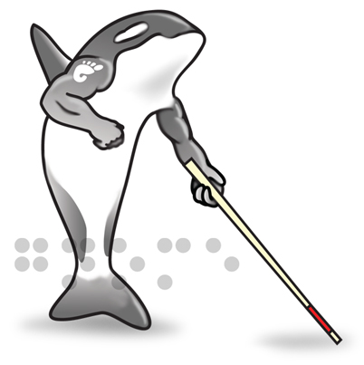

Orca's Contributors
-
Willie Walker
Overall Lead
Sun Microsystems, Inc.
-
Mike Pedersen
UI Lead and Testing
Sun Microsystems, Inc.
-
Rich Burridge
Scripting
Sun Microsystems, Inc.
-
Lynn Monsanto
Scripting for the Java Platform
Sun Microsystems, Inc.
-
Michele Budris
Program Management
Sun Microsystems, Inc.
-
T.V. Raman
ACSS and Emacspeak Server Support
Google
-
Marc Mulcahy
Initial Prototype (while at Sun)
LevelStar
- Many thanks to Dave Mielke for providing and supporting
BrlTTY.
- Many thanks to Orca's translators:
Francisco Javier F. Serrador,
Pawan Chitrakar,
Adam Weinberger,
Maxim Dziumanenko,
Hendrik Brandt,
David Lodge,
Raphael Higino,
Steve Murphy,
Miloslav Trmac,
Christian Rose,
Alessio Frusciante,
Aldo Giambelluca,
Vincent van Adrighem,
Danilo Segan,
Ankit Patel,
Estêvão Samuel Procópio,
Christophe Merlet,
Cedric Corazza,
Gustavo Noronha Silva,
Funda Wang,
Gareth Owen,
and Duarte Loreto
- Many thanks to Jeff Ramsey of Sun Microsystems, Inc., for
creating the Orca artwork.
Orca is released under the
GNU Library
General Public License (LGPL).